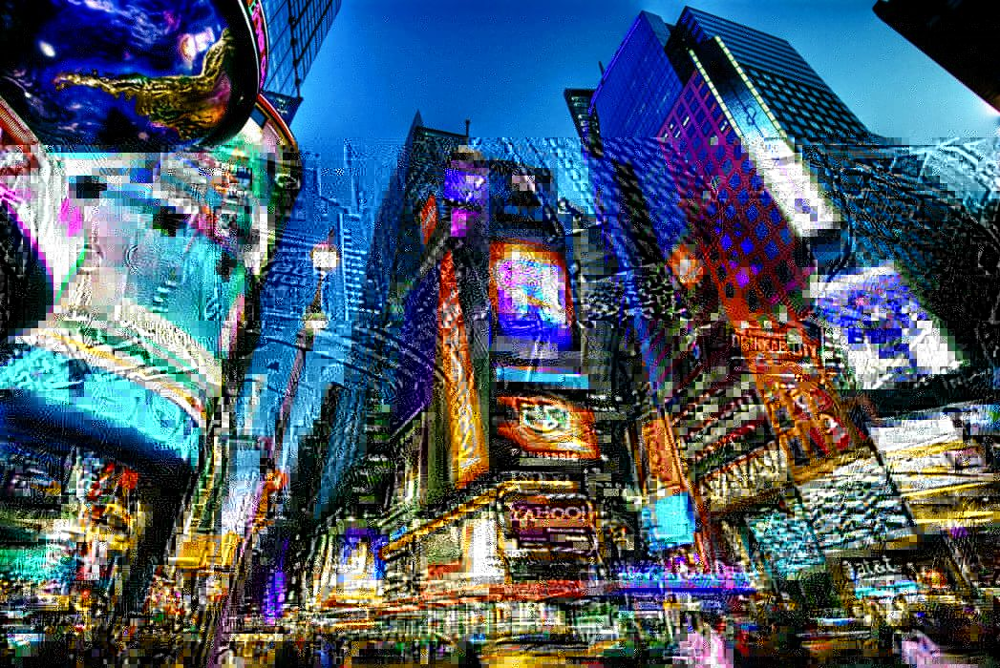
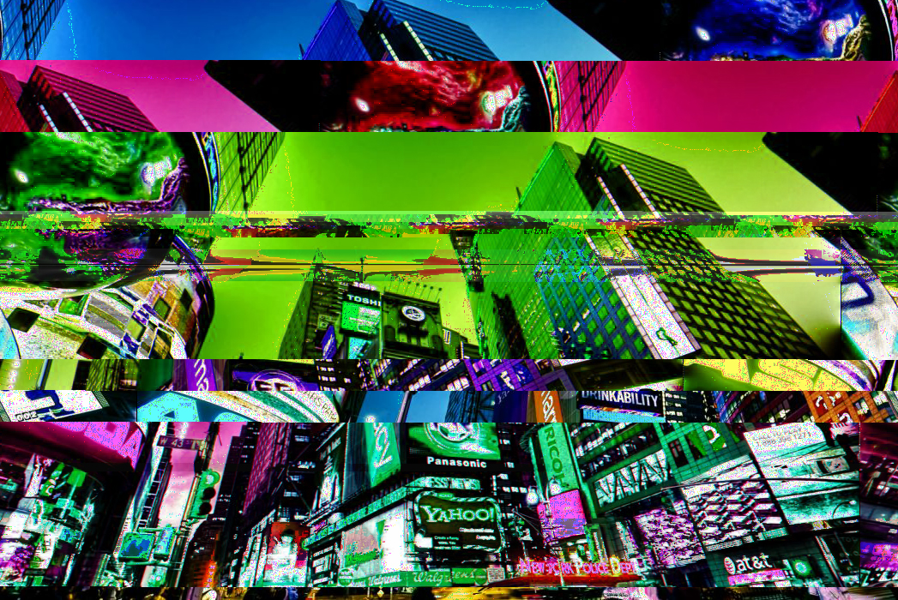
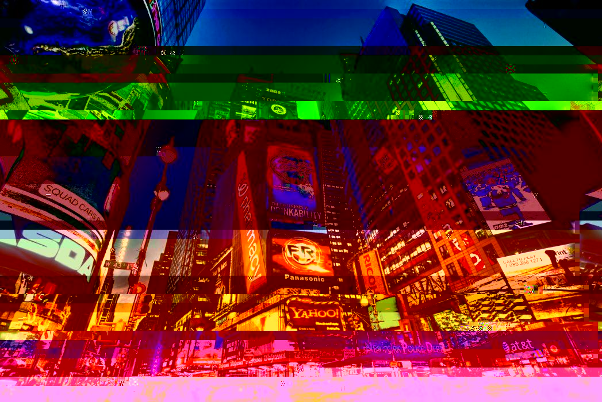
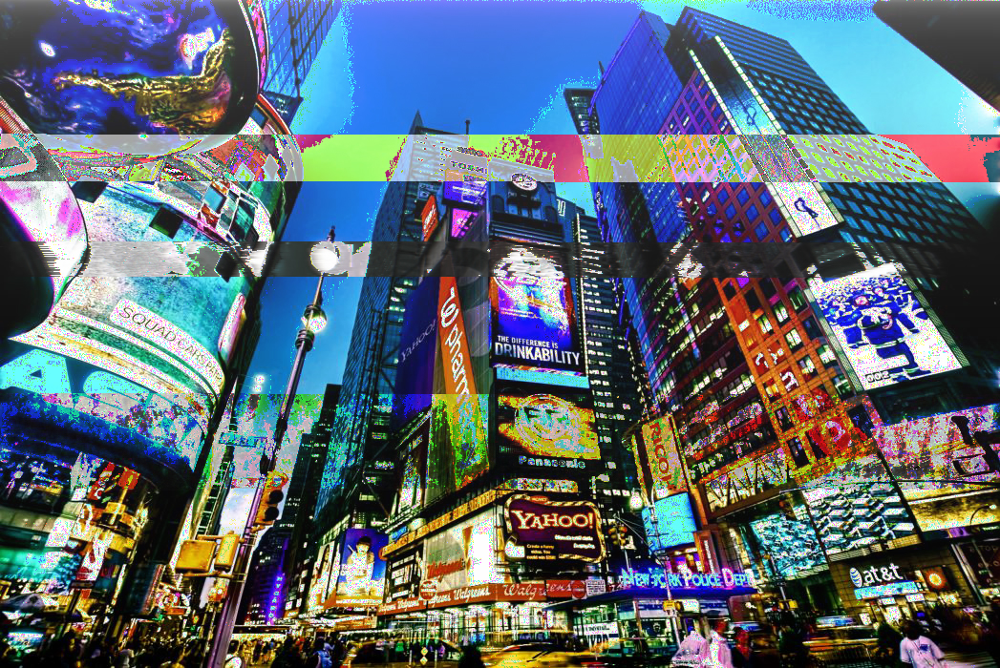
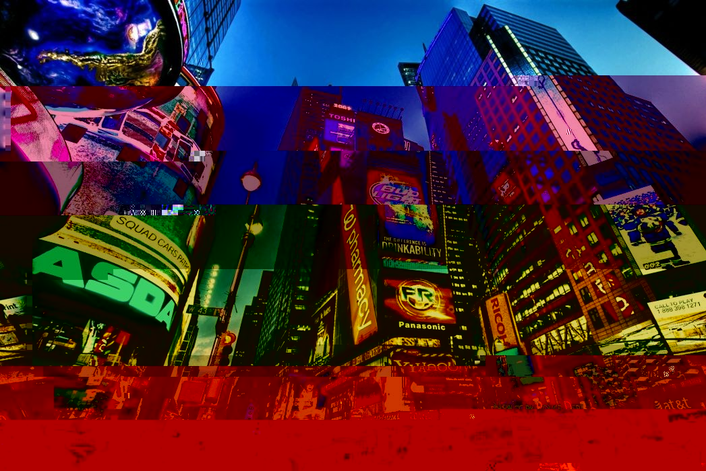

Glitched Art
2021
Glitched Art is a project that I take a photo and use coding as well as Audacity to create the glitch to the photo. The fun of doing this was I couldn't actually control the glitch because I was working with the code under the photo and some of them turned out quite interesting.




